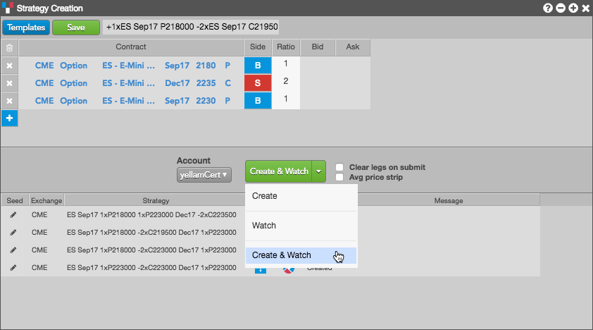
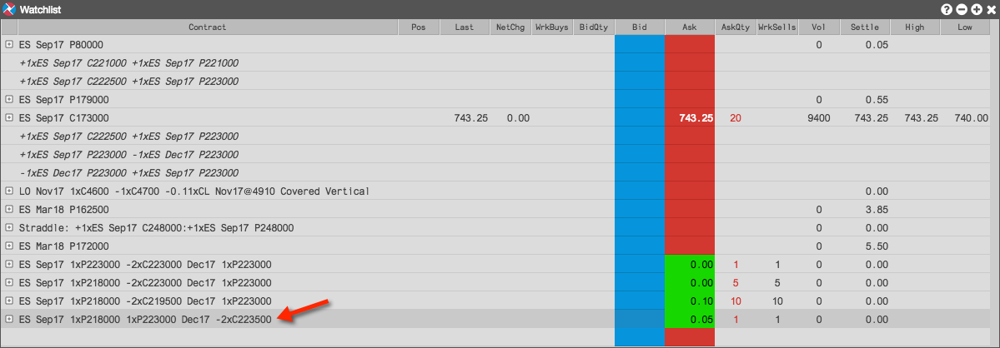
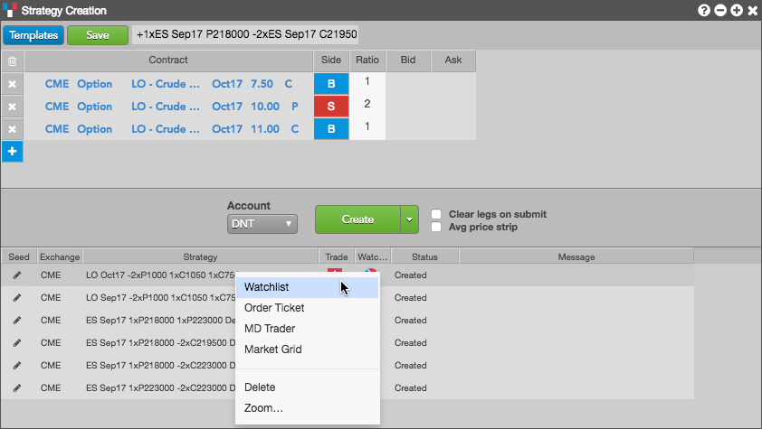
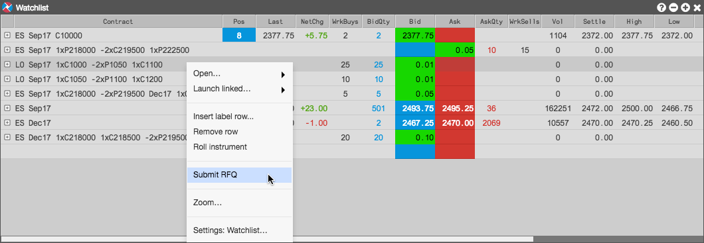
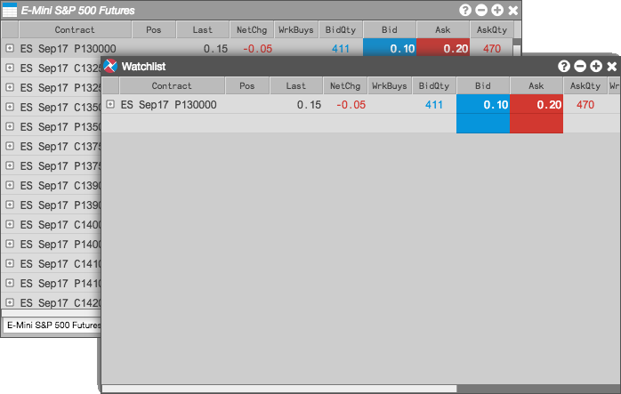
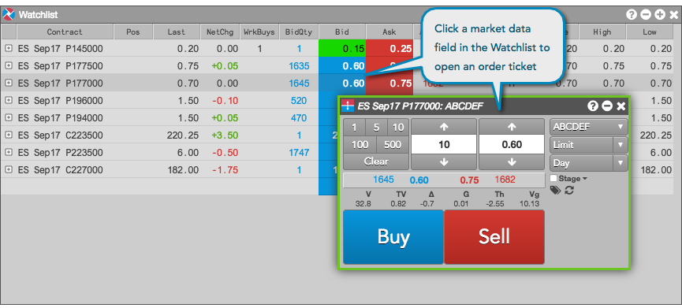
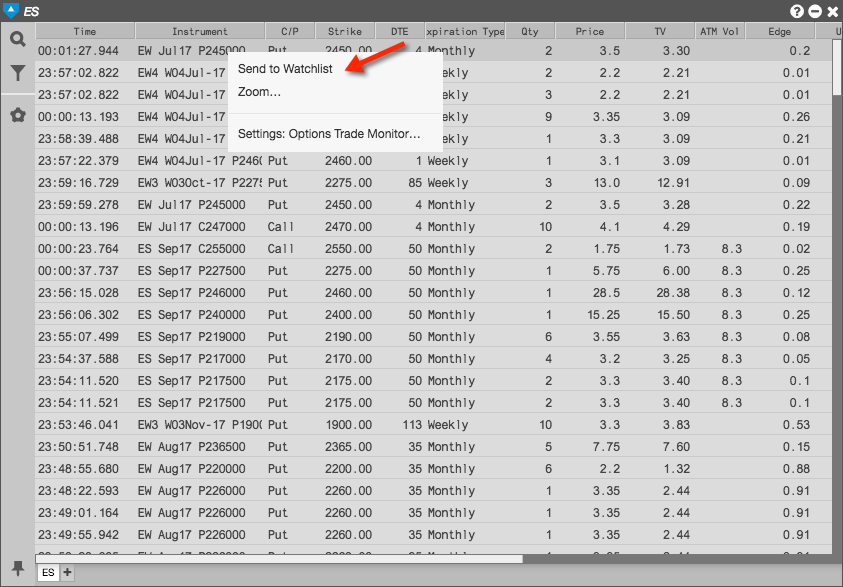
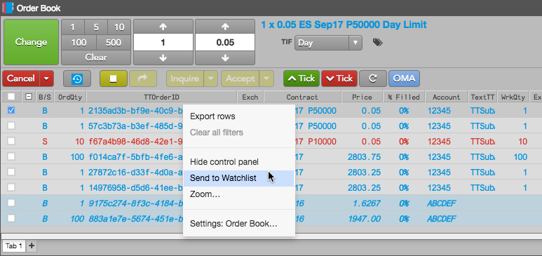

You can use the following widgets to send a single instrument, spread, or options strategy to the Watchlist widget:
- Strategy Creation
- Market Grid
- Options Trade Monitor
- Order Book
Creating a Watchlist from Strategy Creation
- Open a Strategy Creation widget and configure a strategy in the Strategy Definition Grid.
To send the strategy to the Watchlist, click the Create button dropdown arrow and select one of the following:
- Create — Creates and submits the strategy to the exchange.
- Watch — Sends the strategy to the Watchlist widget in your workspace.
- Create & Watch Submits the strategy to the exchange and sends it to the Watchlist widget in your workspace.

When you select Watch or Create & Watch, the user-defined strategy appears in the Watchlist. If you selected Create & Watch, the strategy is sent to the Watchlist and submitted and published at the exchange.

Sending a strategy from a Watchlist to Strategy Creation
For a strategy that you created and submitted to the exchange, you can right-click the strategy in the execution report panel and select Watchlist.

Submitting an RFQ from the Watchlist
After creating an options strategy and adding it to the Watchlist, you can submit an RFQ to the market for the strategy directly from the Watchlist. Select the user-defined strategy in the Watchlist, right-click, and select Submit RFQ.

Creating a Watchlist from Market Grid
After opening a Market Grid widget and loading one or more products or instruments, you can right-click an instrument and send it the Watchlist from the Market Grid using the context menu.
To create a Watchlist:
In an open Market Grid with options products, right click on an instrument.
Select Send to Watchlist in the context menu.

A Watchlist "widget" opens seeded with the selected instrument.

- Repeat the previous steps as needed to send additional instruments to the watchlist.
Submitting orders from the Watchlist
Orders can be submitted by opening an Order Ticket for the instrument in the Watchlist if the instrument exists at the exchange. This is the same functionality available in a Market Grid widget.

Creating a Watchlist from Options Trade Monitor
Right-click a trade in the Options Trade Monitor and select Send to Watchlist in the context menu.

Creating a Watchlist from the Order Book
Right-click a working order in the Order Book and select Send to Watchlist in the context menu.
